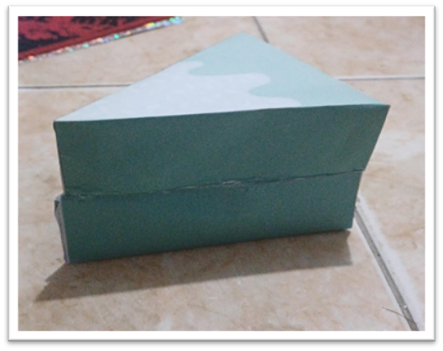
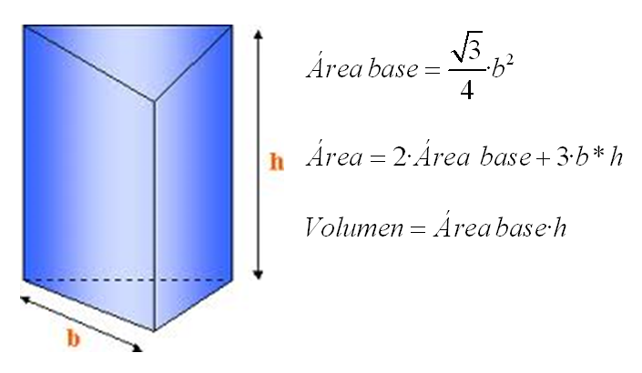
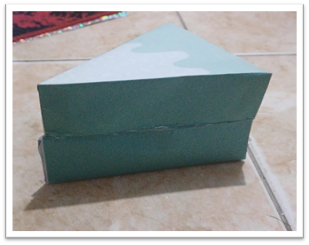
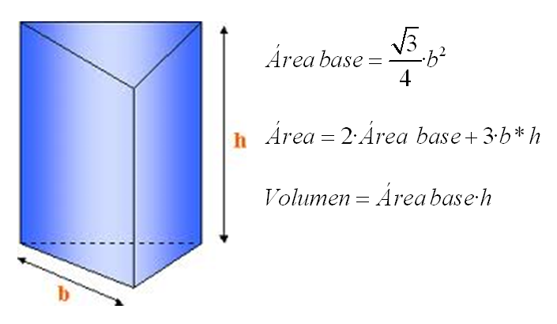

En geometría, un prisma triangular o prisma trigonal es un prisma con 2 bases triangulares. Si las aristas coinciden con el vértice de cada triángulo y son perpendiculares a la base, es un prisma triangular rectángulo. Un prisma triangular rectángulo puede ser a la vez semirregular y uniforme.
Un prisma triangular recto tiene lados rectangulares; un prisma que no cumple esta propiedad se llama oblicuo. Un prisma triangular uniforme es un prisma triangular recto con bases equiláteras y caras laterales cuadradas.
Claro, la fórmula para calcular el volumen
𝑉
V de un prisma triangular es la siguiente: multiplicamos la mitad del producto de la base del triángulo (
𝑏
b), su altura (
𝑎
a), y la altura del prisma (
ℎ
h).
Es decir,
𝑉
=
1
2
×
𝑏
×
𝑎
×
ℎ
V=
2
1
×b×a×h.
Por otro lado, para encontrar el área total (
𝐴
A) del prisma, sumamos el área de las tres caras laterales y las dos bases.
Es decir,
𝐴
=
2
×
𝐴
base
+
𝐴
triángulo
×
𝑛
A = 2 × A
base
+ A
triángulo
× n
Donde
𝐴
base
A
base
es el área de la base triangular,
𝐴
triángulo
A
triángulo
es el área de uno de los triángulos laterales, y
𝑛
n es el número de lados del triángulo base..
Para calcular un prisma triangular, primero necesitas conocer la longitud de la base del triángulo, su altura y la altura del prisma, que es la distancia entre las bases paralelas. Para obtener el volumen del prisma triangular, aplicas la fórmula V = 1/2 × b × a × h, donde b es la longitud de la base del triángulo, a es su altura y h es la altura del prisma. Para encontrar el área total del prisma, empleas la fórmula A = 2 × Abase + Atriángulo × n, donde Abase es el área de la base triangular, Atriángulo es el área de uno de los triángulos laterales y n es el número de lados del triángulo base.
 


